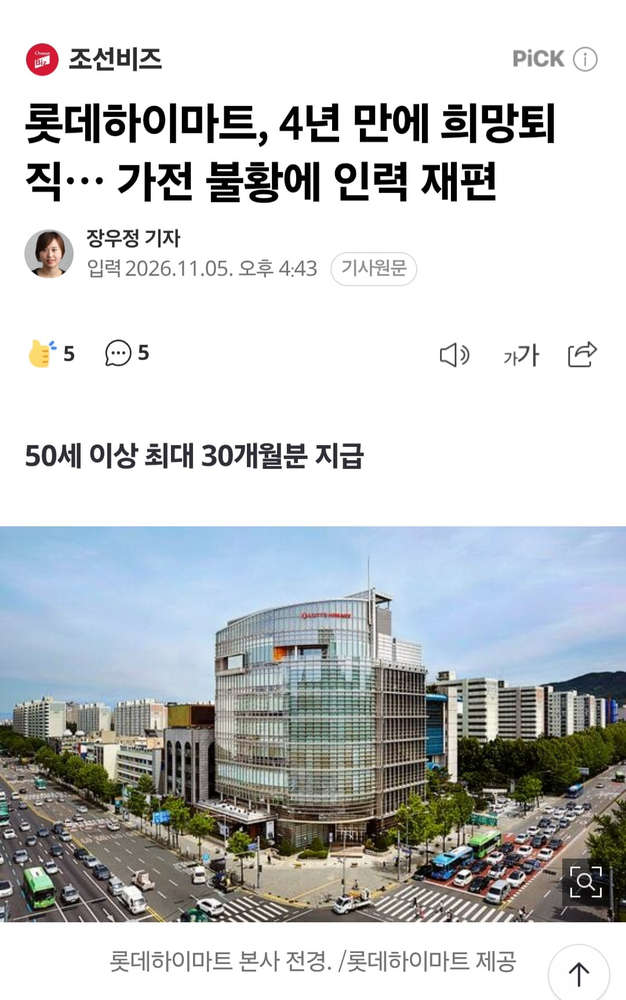
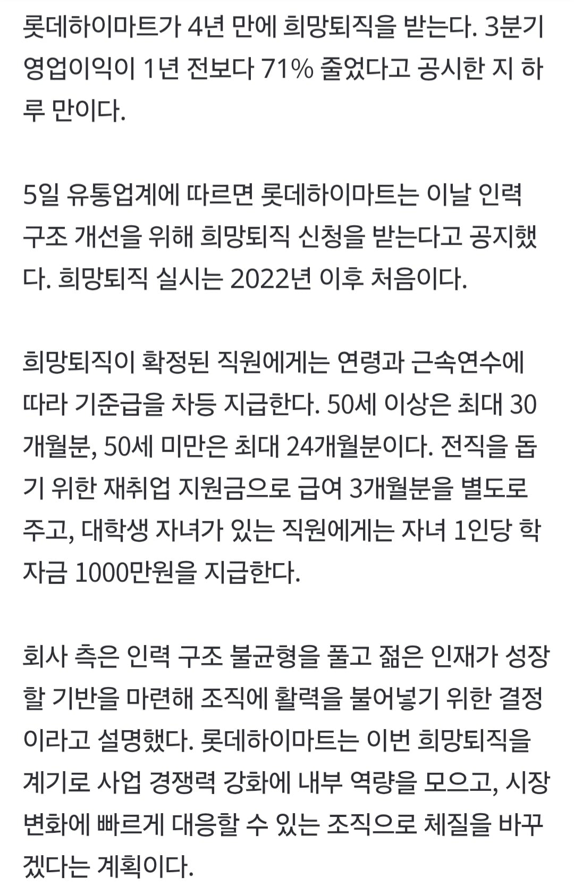

요약
3분기 영업이익이 전년보다 71% 감소.
인력 구조 개선과 경영 효율화를 위한 결정.
50세 이상: 최대 30개월분 기준급 지급.
50세 미만: 최대 24개월분 기준급 지급.
재취업 지원금: 급여 3개월분 별도 지급.
대학생 자녀 1명당 학자금 1,000만 원 지급.


요약
3분기 영업이익이 전년보다 71% 감소.
인력 구조 개선과 경영 효율화를 위한 결정.
50세 이상: 최대 30개월분 기준급 지급.
50세 미만: 최대 24개월분 기준급 지급.
재취업 지원금: 급여 3개월분 별도 지급.
대학생 자녀 1명당 학자금 1,000만 원 지급.
기본급만 주는거 아냐?
연봉이 아니라 기본급이라, 연봉의 30%~50% 정도임. 각종 수당이 모두 빠지기 때문인데 대부분 직장인이 기본급 절반 + 수당 절반정도로 설계되어 있음.
여기서의 수당은 거의 고정급에 가깝지만, 이렇게 “기본급의 두 배”, “기본급의 10%” 식으로 기본급을 기준으로 하는 규정을 저렴하게 적용하기 위해 기본급과 수당을 분리해 놓음.
평균연봉 5000정도라고 나오던디 수당포한인건가 이것도?
구체적인 건 모르겠지만 대부분 기업이 그렇게 되어 있음. “취업규칙”이라는 문서가 회사마다 있는데, 거기 구체적인 비율이 표시되어 있을 것임.
기본급을 높이면 여기 연동되는 세금, 건강보험 등등도 높아지기 때문에 보통은 법에서 허용하는 한도까지 수당으로 최대한 밀어넣는 편.
ㅇㅇ
딱히 하이마트 정직원들은 인센이랄게 크지않음 미비한 수준 거기서 근무하는 도급사직원들이나 인센놀음이지
와 진짜 이거 추천한 애들은 다 백수인가?
하이마트 직원들은 노났지 사실ㅋㅋ
롯데에 인수되고
왜 년차기준이아니라 나이기준임?
최대써둔거봐서는 근속에따라 나뉘는듯
브랜드 매니저들 직고용으로 바꾼다고 할 때부터 알아봤다..
하이마트보다 백화점 본매장이 더 싸서 안간지 좀 됐네
캐시카우로 쪽쪽 빨아먹고 내다버리기
렌탈 팔고 이제 하이마트구나 ㅋㅋ
좆데가 잡으면 제대로 하는게 거의 없네 ㅋㅋㅋ
하이마트가 아직도 살아있었구나
동네에 덩그러니 있는 하이마트는 그냥 뭐 있는지 궁금하고 심심해서 둘러보는 곳이나 다름없음. 언제 한 번 구경하려고 들어가봤는데 직원이 너무 부담스러울 정도로 밀착해서 설명하는데 난 살 생각도 없는데 자꾸 그러니까 매출 압박을 강하게 받는거같았음. 잠실역 하이마트는 규모도 크고 거기가 본진이기도 하고 유동인구가 매우 커서 딱히 관심 없어도 지나가는 통로 중간에 하이마트가 있는거라 꽤 잘 나가는거 같던데 사람들이 많이 똑똑해져서 이런 곳도 상품 둘러보는 용도이고 맘에 드는거 있으면 사진찍어놓고 쿠팡이나 네이버쇼핑 최저가 알아보고 삼
어제 하이마트에서 아이폰17프맥 899,000원!! 하고 광고 있길래 직원한테 물어봄.
직원이 자기는 모바일 담당이 아니라면서 모바일 담당 오면 알아보고 곧 전화 준다고 내 전화번호까지 알려줌.
아직까지 연락 없음.
모바일 담당자 희망퇴직하셨나
회사 두개가 하드캐리해서 GDP는 4만불 찍었는데
경제는 역대급 불황이네
3천이면 그나마 선방일듯 ㅋㅋ 박스피때보다 더 힘듬
그말하면 엄청 뭐라하는 사람들 많음
ㅇㅋㅇㅋ 삭제함 ㅋㅋㅋ
ㅋㅋㅋㅋ
저때 나가면 재취업 힘든거 아님..? 안나가면 불이익있나
지금 같은 시기에 50이나 먹고 나가면 진짜 배달 뛰어야겠네
ㄹㅇ 갑갑하긴 할듯
근데 또 모른다.. 우리 회사에 부장 새로 왔는데 51살이더라
지금 내주변에 40 50대들 신입으로 서울에서 이곳저곳 회사 잘들들어감 물론 월급이 최저시급수준이긴함
하이마트에서 물건 산적 없음 ㅠㅠ ㅋㅋㅋ 아니 접근성 왜 이럼
희망퇴직 안 받으면 어떻게 됨? 본사에서 해당 직원 내보내라고 지시해서 윗사람이 사소한 거 다 지적하고 매출에 도움 안 되는 무쓸모 직원으로 씌여서 퇴사 유도하는거임?
일단 주위에 다 짤리니까 일이 3배 이상 늘어나지
타겟팅이 된 대상이 그럭저럭 평범한 직원일 경우
제일 먼저 인사팀과 1:1 면담.
말그대로 희망퇴직이기에 강제로 내보낼 근거가 없기때문에 보통 퇴직금+비공식 추가인센으로 자진퇴사를 유도함.
경우에 따라 자진으로 나가면 고용보험 수령하도록 도와주겠다며 회유함.
합의하지 않을경우. 일방적으로 잘라낼 수 없기때문에 후속 조치가 이어지는데
옛날 제일 유명했던게 업무용 PC 압수, 파티션 제거 후 책상만 덩그러니 복도나 사람들이 많이 드나드는 출입구쪽으로 빼버리고 업무를 부여하지 않고 가만히 냅두되, 휴대폰사용, 화장실, 담배등 잠시라도 한눈팔지 못하게 철저하게 통제하고 위반시 인사고과를 바닥으로 주던지 업무지시불이행으로 규정들먹거리며 패널티를 주곤했음.
그게 아니면 창업자 자서전을 읽게하고, 일단위, 주단위 보고서를 작성하라는 식이지... 토씨하나 틀리면 점수깎고
왜냐면 이걸 누적시켜서 정당한 업무명령 불이행으로 권고사직또는 징계해고할 수 있는 명분을 만들수 있으니까
요즘엔 이걸 대놓고 티를 내지 못하게 되니 말 그대로 나가지 않으면 못버티게 만들어버림.
예를들어 전국에 여러사업장이 있을경우, 연고지에서 저 멀리 일방적으로 인사발령을 내버린다던가(좀 극단적인 예시지만 서울에 있는 사람을 전남 해남이나 울릉도로 발령내버리기).
일부러 실적이 최악인곳이나 실적 한계가 있을 수 밖에 없는 사업장등 개인역량으로 업무성과를 낼 수 없는곳으로 발령내서 업무성과를 명분으로 역시 인사고과 최악으로 만들기
임시휴업을 명령할 수도 있지만 이건 보통 팀단위, 부서단위로 시행하기에 개인을 대상으론 잘 안하는 걸로 알고있음.
타겟팅된 대상이 개인이 아닌 "그룹" 단위일경우
보통 팀단위로 "TFT" 라는 임시조직을 만들어서 이쪽으로 인사발령을 내고 본 소속 부서는 해체해버림.
이 단위 TFT팀은 강당등 유휴공간에서 무한대기를함. 가만히 앉아있냐? 아님
처음엔 신입사원 교육하듯 업무관련된 창업자, 회사의 역사, 사업장 현황, 비전, 가치, 안전환경등을 교육하고 시험을 봄.
교육시 졸거나 자리를 비우거나 스마트폰을 본다? 인사고과 감점.
시험 못본다? 바로 인사고과 감점.
그러다 차차 업무와 전혀 관련없는 "동티모르의 역사"와 같은 전혀 관련없는 내용을 교육하기 시작함
교육내용만 다르지 과정과 결과는 똑같지.
이거 누적시켜서 근태불량 명분으로 내보내기가 가능해짐
이걸로도 방법이 없던지, 회사가 진짜 상황이 어렵다.
그럼 팀단위로 회사에 소속은 하되, "임시휴업"을 통보하고 출근을 안시킴.
규약에 따라서 기본급의 70% 내외로 지급은 해줌
그런데 출근도 안하고 놀면서 월급 70%나 받으면 개꿀아님? 이럴 수 있는데 보통 이런 이유로 임시휴업을 통보하면 "겸업금지"조항이 함께 붙고 이 70%는 "기본급"이지 "제수당포함"이 아님.
300만원 기본급에 각종 수당 붙어서 월 500을 벌던 사람이 210만원으로 떨어지면 과연 생활이 될까?
혼자살면 모를까 가족이 있는 상태에서는 엄청나게 경제적으로 어려워짐. 게다가 겸업금지임.
피말려 죽이는거지... 이렇게 되면 차라리 퇴직하고 퇴직금이랑 추가 위로금까지 받고 나오는게 더 나을 수도 있음
그래서 이런 경우 꼼수로 4대보험, 인건비 미신고해서 법정최저시급 안받고 아르바이트로 수입보조하는 사람들도 간혹 있음.
타겟팅된 대상이 최악인 직원일경우는 후속조치도 필요없음. 이미 회사는 근태, 업무, 평판, 인사고과등 제반 자료를 다 가지고 있기때문에 발령이고 나발이고 필요없음. 뭐라고 하나 건수 잡히는순간 얄짤없음. 볼펜하나, 이면지 하나 들고 간걸로 트집잡아버림.
그나마 대기업기준으로 이럼
회사가 ㄹㅇ 넘어가기 직전이면 유급휴직이고 기본급이고 추가 인센티브고 나발이고 홈플러스처럼 되는거..
회사도 겁나 어려울때 사용하는 카드이긴한데 이래저래 참 세상은 정말 차갑다
현실적으로 그렇게 까지는 안 할 듯.. 대부분 퇴직 보상 두둑하게 줄 때 조금 더 높혀받거나 하는 선에서 끝이지 1~3년치 급여 내팽겨치고 버티기 해봐야 몇 달도 안 될텐데
글만 읽어도 숨이 턱턱막히네...
신혼 가전 하이마트에서 야무지게 잘 샀는데 많이 힘든가보네;
유진그룹이 엑싯 잘했네. 그 뒤에 산 동양시멘트가 죽 쒀서 문제지.
나도 퇴사마렵다 ㅅㅂ좆같은ㆍ기
게임도 희망퇴직 유통도 희망퇴직 디스플레이도 희망퇴직 존나 빡빡하다 진짜
하이마트 롯데 들어가고 삽질 많이함
점점 인간이 필요없는 시대가 오는구나...무섭다
살기 참 팍팍하구나
얼마전에 신혼가전 산다고 하이마트랑 삼성전자랑 LG랑 3곳 비교해봤는데 하이마트가 왜 하락세인지 알겠더라
물론 캐바캐지만 우리가 생각했던 예산중에 제일 안좋았음
예를 들어서 1300만원으로 한다고 가정했을때
삼성이랑 LG는 최신사양으로 2000만원 맞춘 다음 할인이랑 페이백으로 700만원 돌려주는 방식으로 해서 1300만원으로 거의 모든 가전 최신사양으로 했는데
하이마트는 할인이랑 페이백도 별로 없어서 몇몇 가전은 최신 사양도 아니고 중저가 혹은 단종직전 모델로 견적 맞춰줌
그리고 한번 다녀가니까 한 5일동안 계속 연락와서 바로 차단함
근데 보통 희망퇴직받을때
위로금 월급 곱하기 몇배도주고 퇴직금도 따로주나???
아니면 위로금에 퇴직금을 태우는건가 내가전에 대학병원에있을땐 따로였었는데
대감집은 그래도 나갈떄 돈이라도 주는구나... 연봉 5000이라 치면 1억은 넘네